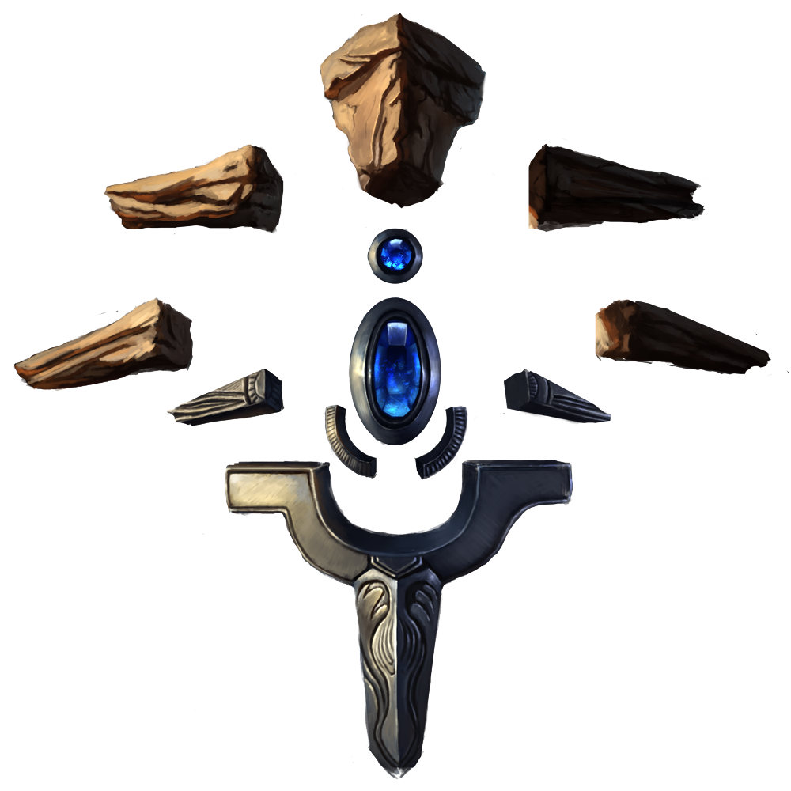
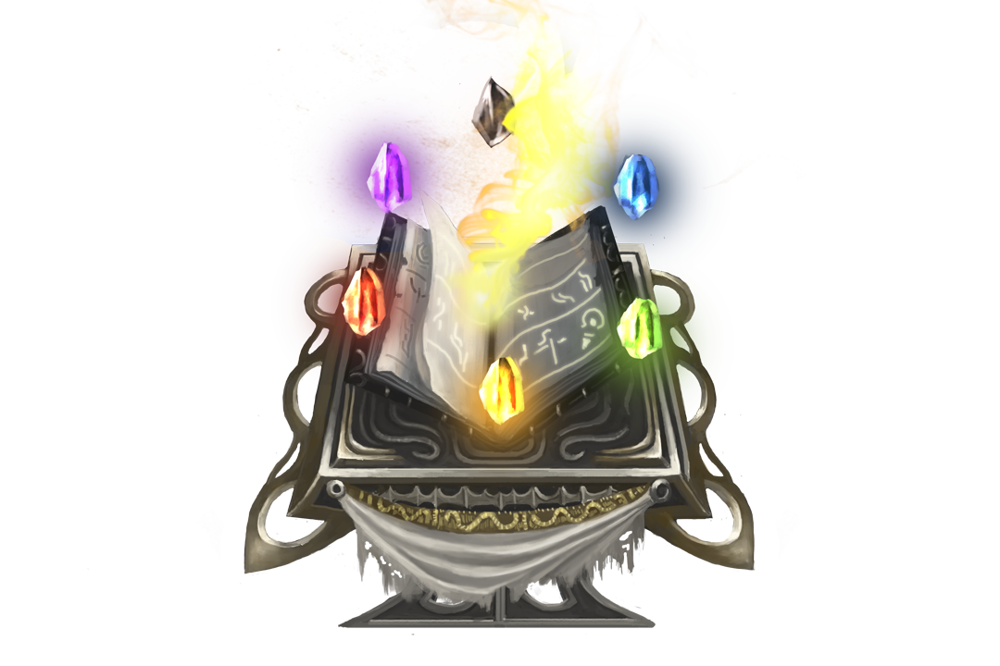

|
|||
|---|---|---|---|
THE ONE TAIL KITSUNE |
|||
|  | 
| 
|  |
REALM |
TYPE |
CLASS |
|
Edolas |
Ranged |
Magical |
Cleric |
Region |
|||
Kaminari Forest |
|||
Kahlea dashed through the mysterious Kaminari Forest, racing to help the Fae creatures
bleating in despair. The Fae had welcomed her when she needed it most and it was time
to return the favor. She listened to the human voices echoing through the treetops as
she stopped warily at a nearby tree. Below, a cherry bloom elk wailed in pain as hunters
dragged the majestic Fae into a crate. Kahlea's blue shadow slashed above the busy
humans as she sped through treetops to reach their wagon.
The kitsune dropped next to the vehicle. She could see it swaying as desperate Fae
thrashed inside stacks of cages. Hopelessness emanated from them, the same way she
felt while trapped inside her birth den. Kahlea tucked her single blue tail close to her,
recalling of what it felt like for her family to shun her for so long, disappointed by her failed
potential and the great dishonor she brought them. Kahlea shook herself of the feeling
and took a couple of steps towards the vehicle’s opening, her shame giving way to a
newly found passion.
The hunters voices hushed. A wide smile spread across her face, her fur rose with the
excitement of the game. A gun cocked from inside the truck, she tensed, every muscle
tightened in preparation. Shotgun blasts punched a hole through the wooden barrier, and
the hunter jumped out to follow Kahlea, his allies abandoned the elk to chase the fox into
the treeline. Abruptly, all the Fae screeched in unison from inside their cages.
Giggles led the hunters behind a nightshade bush brimming with glistening neon fruit.
The lead hunter teased loudly about his kitsune knowledge; he spewed about how her
single tail made her young, curious, and weak. Grinning, Kahlea chuckled to herself at
their foolishness. Having one tail had shadowed Kahlea from her childhood and her
littermates grew more tails as proof of their experiences and age, but she was never
capable of doing the same.
Her laughter intensified as an electric net slung over the bush catching nothing but air.
Infuriated, the head hunter took another shot, this time with his shotgun, directly at the
bush. Glowing juice splashed and covered his entourage as Kahlea continued to enjoy
her game.
Inside the wagon, Kahlea had been working hard to free her Fae family all along. Only
seconds after the hunters began chasing her illusion, she reappeared and ventured
inside the wagon. The Fae were screeching for her attention, for her help. Rubbing her
one blue tail with both hands, Kahlea dispersed sparks throughout the cages. Azure
sparkles rushed to free the shackles of the Fae. She huffed, annoyed at Halcyonar's
violation of the ancient treaty. Kahlea snickered when the fruity smells filled the air as the
hunters stood splattered with her deception.
The hunters turned to rush the wagon which now emanated blue energy. Their assault
slowed to a halt as exotic birds, insects, and all the Fae they had captured poured out to
overwhelm them. Screams emerged as all the humans were carried, dragged, and
herded deep into the forest to face Viridios’ justice. Kahlea jumped out and waved at the
disappearing crowd, she laughed imagining the mischievous spell she would use if she
had to punish the disrespectful hunters. She turned to the sun and yelped as she realized
the time. Kahlea sped away late to meet her family for their first dinner together in a long
time.
OFFICIAL ART


RELATED MYTHS